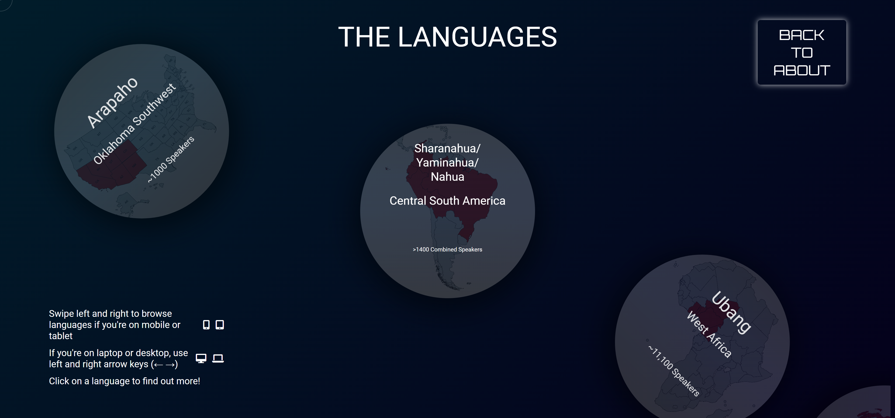

About the project
"Echoes of the Silenced" is my final graduation project, It is an immersive audio-visual installation that raises awareness about the rapid disappearance of endangered languages. This project combines auditory stimuli from eight critically endangered languages with visual animations to create a multi-sensory experience.
Each language is represented by a unique color palette, reflecting its cultural heritage. Inspired by chromesthesia, the installation uses synchronized sounds and animations to engage viewers deeply, fostering a connection to these vanishing languages.
Demo Video
Viewers can watch for as long as they please and learn using a functional and interactive website. This project is accessible to viewers of all ages, meaning it can be exhibited and discussed in various settings.
Website

Accompanying this installation is a website containing an explanation of the project and further information about each language aimed at educating and inspiring the audience. The website is integrated as a scannable QR code that viewers scan once the video has run its loop. The design of the accompanying website for the installation has been conceptualised to be both interactive and intuitive, ensuring an extension of the immersive experience offered by the video.